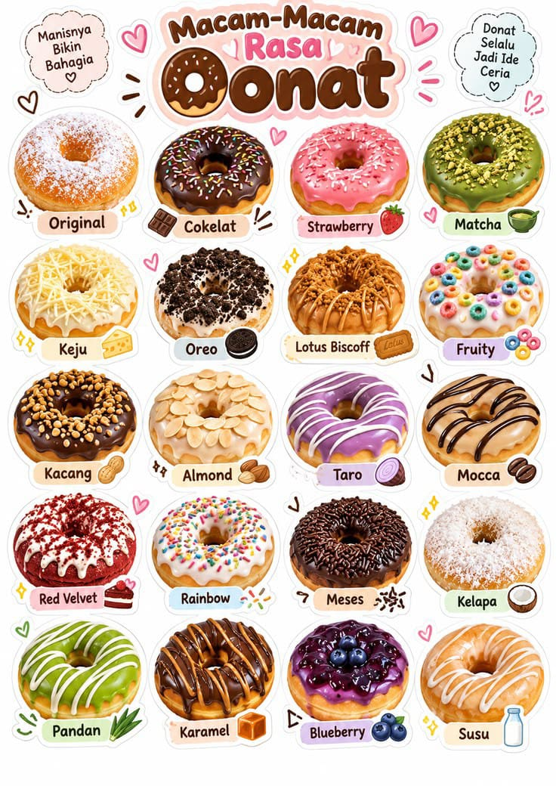

Cerita Usaha
Tentang Donat Manis
Donat Manis merupakan UMKM di bidang makanan ringan, khususnya donat. Usaha ini berawal dari keinginan untuk membuat donat yang enak, lembut, dan dapat dinikmati oleh berbagai kalangan.
Donat Manis dikembangkan dari usaha rumahan dengan mencoba berbagai resep dan pilihan rasa. Seiring berjalannya waktu, Donat Manis mulai menawarkan beberapa varian, seperti donat original dan donat kentang, dengan topping yang menarik dan sesuai dengan selera pelanggan.

Keunggulan Donat Manis
- Menggunakan bahan lokal dan berkualitas.
- Menyediakan berbagai pilihan rasa dan toping yang disukai pelanggan.
- Memberikan pelayanan yang ramah dan terbaik untuk semua pelanggan.